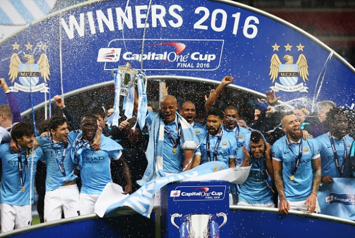

Манчестър Сити спечели Купата на Лига та след изпълнение на дузпи. Срещата завърши 1:1 в редовното време и продълженията, а при дузпите "гражданите" стигнаха до 3:1. Сити печели трета Купа на Лигата, докато Ливърпул записа рекорден 12-и финал в турнира. Успехът гарантира, че Мануел Пелегрини ще си тръгне с трофей в последния си сезон, начело на тима. Юрген Клоп пък пропусна първат а си възможност за триумф с мърсисайдци. За германеца това четвърти пореден з агубен финал, след като два пъти това му се случи в Купата на Германия и ве днъж в Шампионската лига.
Exercise3
Манчестър Сити ще изпрати Пелегрини с трофей
- February 28, 2016
- Leave a comment